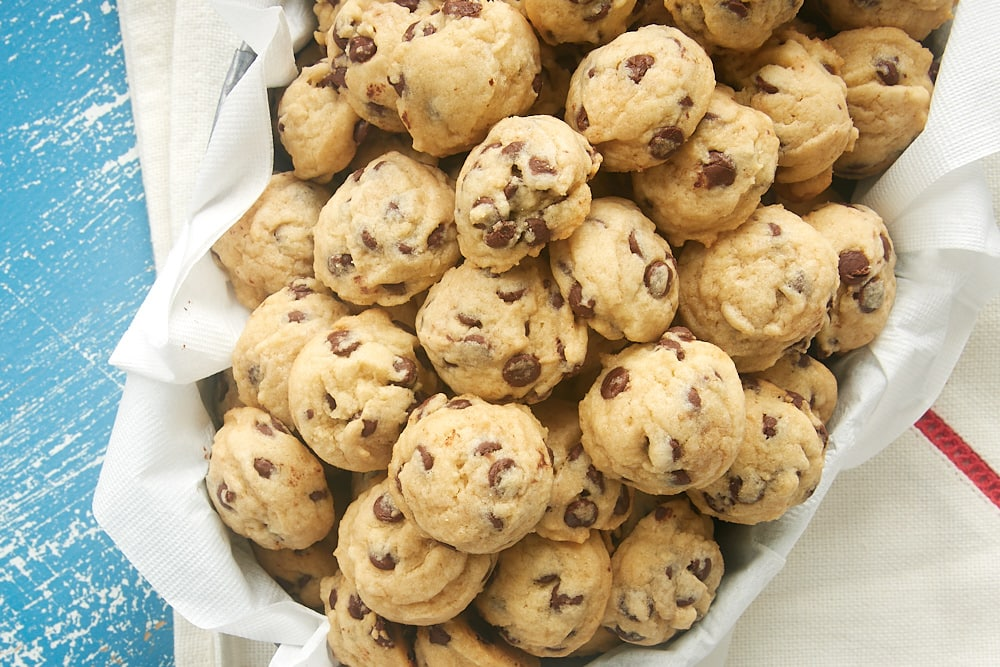

Home
Mini Chocolate Chip Cookies

Description
Cute, bite-sized, and absolutely delicious, these mini chocolate chip cookies feature a crunchy base with a soft, chewy center—just like a perfect classic cookie, only smaller.
Ingredients
- 1 1/2 cups all purpose flour
- 3/4 teaspoon baking soda
- 1/2 teaspoon salt
- 1/2 cup salted butter, softened
- 1/2 cup packed brown sugar
- 1/3 cup white sugar
- 1 large egg
- 1 large egg yolk
- 1 1/2 teaspoons vanilla extract
- 1 1/4 cups miniature semisweet chocolate chips
Steps
- Preheat the oven to 350°F (175°C). Line baking sheets with parchment paper and place oven racks in the upper and lower thirds.
- In a small bowl, whisk together the flour, baking soda, and salt.
- In a large bowl, beat the butter until creamy. Add the brown sugar and white sugar and beat until light and fluffy. Mix in the egg, egg yolk, and vanilla, then gradually add the flour mixture until just combined.
- Stir in the chocolate chips.
- Divide the dough into four portions, wrap, and chill for at least 1½ hours (or up to 24 hours).
- Roll each dough portion into a thin rope, cut into small pieces, and place on the prepared baking sheets.
- Bake until golden brown, about 8–9 minutes, rotating pans halfway through. Cool on the baking sheets before serving.